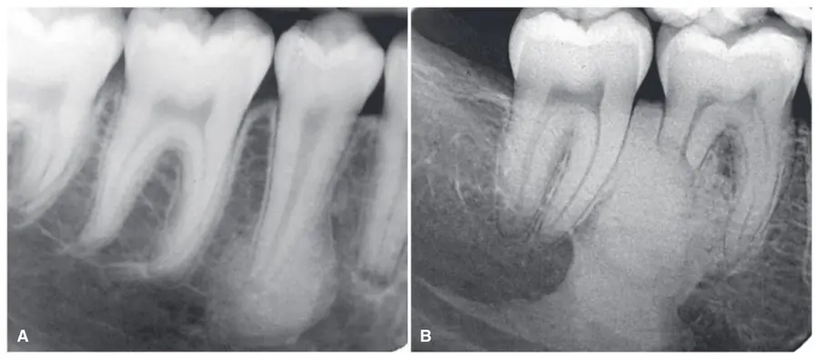
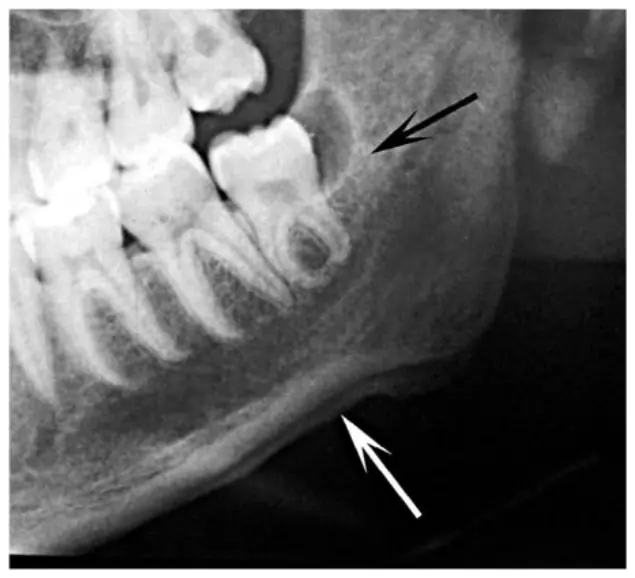

نسخه استخراجشده؛ ترجمه یا تأیید علمی انجام نشده است. وضعیت: captured
نخست، دو افتراق اصلی: «دو ضایعهای که بیش از همه باید از بیماری التهابی پریاپیکال تفکیک شوند، دیسپلازی سمنتو-اوسئوس پریاپیکال (PCOD) و جزیرهی استخوانی متراکم (DBI) هستند.»

و یک محدودیت مهم دربارهی PCOD: «در فاز رادیولوسنت زودرس PCOD، ویژگیهای تصویری نمیتوانند بهطور قابل اتکا این ضایعه را از بیماری التهابی پریاپیکال تفکیک کنند. تشخیص ممکن است تنها بر معاینهی بالینی تکیه کند.»
و آن معاینهی بالینی چیست؟ «دندان مجاور یک کانون PCOD نتیجهی تست وایتال میدهد، در حالی که دندان مجاور ضایعهی بیماری التهابی پریاپیکال نانوایتال تست میشود.» — یک تست ساده، دو تشخیص کاملاً متفاوت. و محل کلاسیک PCOD ناحیهی پریاپیکال قدام مندیبل است.
سه نشانهی تصویری کمکی برای PCOD:
حالا جزیرهی استخوانی متراکم (DBI). «وقتی DBI روی آپکس ریشهی دندان متمرکز باشد، ممکن است کانونی از استئیت اسکلروزان را تقلید کند.»
و نشانهی افتراقی قاطعش: «در چنین مواردی، DBI پهنای فضای لیگامان پریودنتال را پیرامون آپکس تغییر نمیدهد.» — یعنی PDL یکنواخت میماند.
و یک استثنای جالب: «برخی DBIها، بهویژه وقتی مجاور آپکس ریشهی مولرهای مندیبل رشد کنند، میتوانند تحلیل خارجی ریشه ایجاد کنند. هرچند میزان تحلیل خودمحدودشونده است، آپکس چنین دندانی ممکن است کند و غیرباریکشونده شود.»
ولی حتی در آن حالت، سه نشانه باقی میماند: «یک فضای PDL نازک و حفظشده میان آپکس تحلیلرفته و DBI دیده میشود، پالپ این دندان باید وایتال تست شود، و منطقهی گذار میان DBI و استخوان نرمال مجاور باریک است — برخلاف استئیت اسکلروزان.»
و در موارد نادر: «ضایعات متاستاتیک و بدخیمیهای خونزاد مانند لوسمی ممکن است درون فضای لیگامان پریودنتال آپیکال پدید آیند. بررسی دقیق استخوان اطراف ممکن است سایر تغییرات استخوانی را آشکار کند، از جمله نواحی متعدد با اندازههای متغیر از تخریب استخوان کنسلوس.»
ضایعهای پریاپیکال که پس از درمان ریشه باقی مانده یا برگشته است. چه چیزی باید بگردی؟

سرنخ رادیوگرافیک: «پایداری یا بازپیدایی یک کانون رادیولوسنت در آپکس با محیط هیدرولیک میتواند سرنخی باشد که التهاب پایدار مانده یا عود کرده است.»
و پنج علت ممکن: «درمان اندودانتیک ارتوگراد ناکافی، مورفولوژی غیرمعمول کانال ریشه، حضور یک کانال درماننشده، پرفوریشن سطح ریشه، یا شکستگی ریشه.»
ابزار و تصمیم: «CBCT با میدان دید محدود ممکن است در تعیین علت بیماری پایدار یا عودکننده مفید باشد.» و تصمیم درمانی: «در نبود شکستگی ریشه، بازدرمانی ارتوگراد یا جراحی اندودانتیک پریاپیکال میتواند در نظر گرفته شود. ولی اگر شکستگی ریشه کشف شود، مدیریت میتواند شامل کشیدن دندان باشد.»
حالا پریکورونیت. «یک تشخیص بالینی است که به التهاب اوپرکولوم بافت نرم پیرامون تاج یک دندان نیمهرویشیافته اشاره دارد» — به آن اوپرکولیت هم میگویند. «بیشتر در ارتباط با مولرهای سوم مندیبل در بزرگسالان جوان دیده میشود.»
سازوکارش: «لثهی پیرامون بخش رویشیافتهی تاج وقتی غذا یا دبری میکروبی زیر بافت نرم گیر میافتد ملتهب میشود. سپس لثه متورم میشود و ممکن است ثانویاً با اکلوژن مقابل تروماتیزه گردد.» و علائم بالینی: درد و تورم، با تریسموس بهعنوان تظاهر شایع.
و طیف تصویریاش گسترده است: «از هیچ تغییری وقتی ضایعه به بافت نرم محدود است، تا رارفکشن موضعی پیرامون تاج و ریشه، تا اسکلروز استخوان مجاور. اگر پاسخ التهابی شدیدتر شود، تغییرات میتوانند به سطح استخوان برسند و در شدیدترین موارد به استئومیلیت بینجامند.»
حاشیه و ساختار داخلی: حاشیه «نامشخص با منطقهی گذار پهن میان الگوی ترابکولار نرمال و استخوان اسکلروتیک». ساختار داخلی «اغلب اسکلروتیک با ترابکولهای ضخیمشده»؛ و ممکن است «ناحیهای از تحلیل استخوان بلافاصله مجاور تاج دیده شود که فضای فولیکولی را بزرگ میکند».
و تا کجا میرود؟ «با درگیری گستردهتر، شواهد استخوانسازی نو پریوستئال ممکن است در سطح استخوان مجاور دیده شود، و این میتواند تا ارتفاع بریدگی سیگموئید مندیبل بالا رود.»